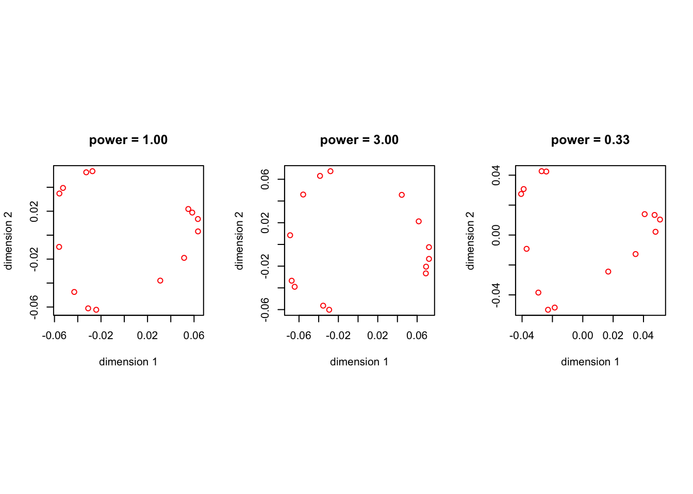
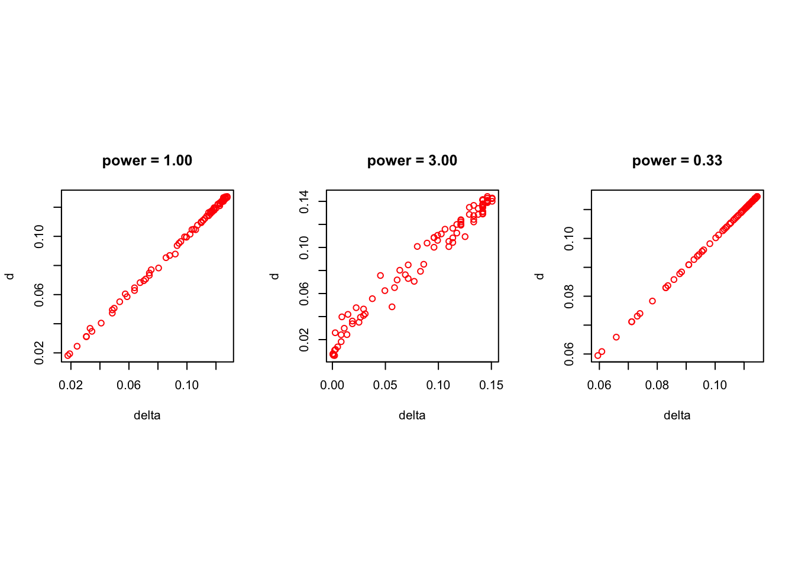

Stress is convex on cross product space.13 Full-dimensional Scaling
13.1 Convexity
13.2 Optimality
13.3 Iteration
13.4 Cross Product Space
So far we have formulated the MDS problem in configuration space. Stress is a function of \(X\), the \(n\times p\) configuration matrix. We now consider an alternative formulation, where stress is a function of a positive semi-definite \(C\) or order \(n\). The relevant definitions are \[\begin{equation} \sigma(C):=1-2\rho(C)+\eta(C), \end{equation}\] where \[\begin{align*} \rho(C)&:=\mathbf{tr}\ B(C)C,\\ \eta(C)&:=\mathbf{tr}\ VC, \end{align*}\] with \[\begin{equation*} B(C):=\mathop{\sum\sum}_{1\leq i<j\leq n} \begin{cases}w_{ij}\frac{\delta_{ij}}{d_{ij}(C)}A_{ij}&\text{ if }d_{ij}(C)>0,\\ 0&\text{ if }d_{ij}(C)=0.\end{cases} \end{equation*}\] and \(d_{ij}^2(C):=\mathbf{tr}\ A_{ij}C\).
We call the space of all positive semi-definite \(n\times n\) matrices cross product space. The problem of minimizing \(\sigma\) over \(n\times p\)-dimensional configuration space is equivalent to the problem of minimizing \(\sigma\) over the set of matrices \(C\) in \(n\times n\)-dimensional cross product space that have rank less than or equal to \(p\). The corresponding solutions are related by the simple relationship \(C=XX'\).
Proof. First, \(\eta\) is linear in \(C\). Second, \[ \rho(C)=\mathop{\sum\sum}_{1\leq i<j\leq n} w_{ij}\delta_{ij}\sqrt{\mathbf{tr}\ A_{ij}C}. \] This is the weighted sum of square roots of non-negative functions that are linear in \(C\), and it is consequently concave. Thus \(\sigma\) is convex.
Unfortunately the subset of cross product space of all matrices with rank less than or equal to \(p\) is far from simple (see (datorro_15?)), so computational approaches to MDS prefer to work in configuration space.
13.5 Full-dimensional Scaling
Cross product space, the set of all positive semi-definite matrices, is a closed convex cone \(\mathcal{K}\) in the linear space of all \(n\times n\) symmetric matrices. This has an interesting consequence.
Full-dimensional scaling, i.e. minimizing $\sigma$ over $\mathcal{K}$, is a convex programming problem. Thus in FDS all local minima are global. If $w_{ij}\delta_{ij}>0$ for all $i,j$ then the minimum is unique.This result has been around since about 1985. De Leeuw (1993) gives a proof, but the report it appeared in remained unpublished. A published proof is in “Inverse Multidimensional Scaling” (2007). Another treatment of FDS, with a somewhat different emphasis, is in De Leeuw (2014).
Now, by a familiar theorem (Theorem 31.4 in Rockafellar (1970)), a matrix \(C\) minimizes \(\sigma\) over \(\mathcal{K}\) if and only if \[\begin{align} C&\in\mathcal{K},\\ V-B(C)&\in\mathcal{K},\\ \mathbf{tr}\ C(V-B(C))&=0. \end{align}\] We give a computational proof of this result for FDS that actually yields a bit more.
For $\Delta\in\mathcal{K}$ we have
\begin{equation}
\sigma(C+\epsilon\Delta)=\sigma(C)-2\epsilon^{\frac12}\sum_{\mathbf{tr}\ A_iC = 0}w_i\delta_i\sqrt{\mathbf{tr}\ A_i\Delta}+\epsilon\ \mathbf{tr}\ (V-B(C))\Delta
+o(\epsilon).\label{E:expand}
\end{equation}Proof. Simple expansion.
Suppose $C$ is a solution to the problem of minimizing $\sigma$ over $\mathcal{K}$. Then
* $\mathbf{tr}\ A_{ij}C > 0$ for all $i,j$ for which $w_{ij}\delta_{ij}>0$.
* $V-B(C)$ is positive semi-definite.
* $\mathbf{tr}\ C(V-B(C))=0$.
* If $C$ is positive definite then $V=B(C)$ and $\sigma(C)=0$.
Proof. The \(\epsilon^\frac12\) term in \(\eqref{E:expand}\) needs to vanish at a local minimum. This proves the first part. It follows that at a local minimum
\[\begin{equation*} \sigma(C+\epsilon\Delta)=\sigma(C)+ \epsilon\ \mathbf{tr}\ (V-B(C))\Delta+o(\epsilon). \end{equation*}\]
If \(V-B(C)\) is not positive semi-definite, then there is a \(\Delta\in\mathcal{K}\) such that \(\mathbf{tr}\ (V-B(C))\Delta < 0\). Thus \(C\) cannot be the minimum, which proves the second part. If we choose \(\Delta=C\) we find
\[\begin{equation*} \sigma((1+\epsilon)C)=\sigma(C)+ \epsilon\ \mathbf{tr}\ (V-B(C))C+o(\epsilon). \end{equation*}\]
and choosing \(\epsilon\) small and negative shows we must have \(\mathbf{tr}\ (V-B(C))C=0\) for \(C\) to be a minimum. This proves the third part. Finally, if \(\sigma\) has a minimum at \(C\), and \(C\) is positive definite, then from parts 2 and 3 we have \(V=B(C)\). Comparing off-diagonal elements shows \(\Delta=D(C)\), and thus \(\sigma(C)=0\).
If \(C\) is the solution of the FDS problem, then \(\mathbf{rank}(C)\) defines the Gower rank of the dissimilarities. The number of positive eigenvalues of the negative of the doubly-centered matrix of squared dissimilarities, the matrix factored in classical MDS, defines the Torgerson rank of the dissimilarities. The Gower conjecture is that the Gower rank is less than or equal to the Torgerson rank. No proof and no counter examples have been found.
We compute the FDS solution using the smacof algorithm \[\begin{equation} X^{(k+1)}=V^+B(X^{(k)}) \end{equation}\] in the space of all \(n\times n\) configurations, using the identity matrix as a default starting point. Since we work in configuration space, not in crossproduct space, this does not guarantee convergence to the unique FDS solution, but after convergence we can easily check the necessary and sufficient conditions of theorem @ref(thm:rockafellar).
As a small example, consider four points with all dissimilarities equal to one, except \(\delta_{14}\) which is equal to three. Clearly the triangle inequality is violated, and thus there certainly is no perfect fit mapping into Euclidean space.
The FDS solution turns out to have rank two, thus the Gower rank is two. The singular values of the FDS solution are
[1] 0.4508464709 0.2125310645 0.0000001303Gower rank two also follows from the eigenvalues of the matrix \(B(C)\), which are
[1] 1.0000000000 1.0000000000 0.920554346413.6 Ekman example
The Ekman (1954) color data give similarities between 14 colors.
434 445 465 472 490 504 537 555 584 600 610 628 651
445 0.86
465 0.42 0.50
472 0.42 0.44 0.81
490 0.18 0.22 0.47 0.54
504 0.06 0.09 0.17 0.25 0.61
537 0.07 0.07 0.10 0.10 0.31 0.62
555 0.04 0.07 0.08 0.09 0.26 0.45 0.73
584 0.02 0.02 0.02 0.02 0.07 0.14 0.22 0.33
600 0.07 0.04 0.01 0.01 0.02 0.08 0.14 0.19 0.58
610 0.09 0.07 0.02 0.00 0.02 0.02 0.05 0.04 0.37 0.74
628 0.12 0.11 0.01 0.01 0.01 0.02 0.02 0.03 0.27 0.50 0.76
651 0.13 0.13 0.05 0.02 0.02 0.02 0.02 0.02 0.20 0.41 0.62 0.85
674 0.16 0.14 0.03 0.04 0.00 0.01 0.00 0.02 0.23 0.28 0.55 0.68 0.76We use three different transformations of the similarities to dissimilarities. The first is \(1-x\), the second \((1-x)^3\) and the third \(\sqrt[3]{1-x}\). We need the following iterations to find the FDS solution (up to a change in loss of 1e-15).
power = 1.00 itel = 6936 stress = 0.0000875293
power = 3.00 itel = 171 stress = 0.0110248119
power = 0.33 itel = 423 stress = 0.0000000000 For the same three solutions we compute singular values of the thirteen-dimensional FDS solution.
[1] 0.1797609824 0.1454675297 0.0843865491 0.0777136109 0.0486123551
[6] 0.0393576522 0.0236290817 0.0162344515 0.0072756171 0.0000031164
[11] 0.0000000009 0.0000000000 0.0000000000
[1] 0.2159661347 0.1549184093 0.0000000727 0.0000000041 0.0000000000
[6] 0.0000000000 0.0000000000 0.0000000000 0.0000000000 0.0000000000
[11] 0.0000000000 0.0000000000 0.0000000000
[1] 0.1336126813 0.1139019875 0.0880453752 0.0851609618 0.0710424935
[6] 0.0664988952 0.0561005006 0.0535112029 0.0492295395 0.0479964575
[11] 0.0468628701 0.0410193579 0.0388896490Thus the Gower ranks of the transformed dissimilarities are, repectively, nine (or ten), two, and thirteen. Note that for the second set of dissimilarities, with Gower rank two, the first two principal components of the thirteen-dimensional solution are the global minimizer in two dimensions. To illustrate the Gower rank in yet another way we give the thirteen non-zero eigenvalues of \(V^+B(X)\), so that the Gower rank is the number of eigenvalues equal to one. All three solutions satisfy the necessary and sufficient conditions for a global FDS solution.
[1] 1.0000000432 1.0000000222 1.0000000012 1.0000000005 1.0000000002
[6] 1.0000000001 1.0000000000 1.0000000000 0.9999993553 0.9989115116
[11] 0.9976821885 0.9942484083 0.9825147154
[1] 1.0000000000 1.0000000000 0.9234970864 0.9079012130 0.8629365849
[6] 0.8526920031 0.8298036209 0.8145561677 0.7932385763 0.7916517225
[11] 0.7864426781 0.7476794757 0.7282682474
[1] 1.0000000820 1.0000000241 1.0000000047 1.0000000009 1.0000000004
[6] 1.0000000003 1.0000000001 1.0000000001 1.0000000001 1.0000000000
[11] 0.9999999999 0.9999999689 0.9999999005We also plot the first two principal components of the thirteen-dimensional FDS solution. Not surprisingly, they look most circular and regular for the solution with power three, because this actually is the global minimum over two-dimensional solutions. The other configurations still have quite a lot of variation in the remaining dimensions.

Figure @ref{fig:ekmantrans} illustrates that the FDS solution with power 3 is quite different from power 1 and power one \(1/3\) Basically the transformations with lower powers result in dissimilarity measures that are very similar to Euclidean distances in a high-dimensional configuration, while power equal to 3 makes the dissimilarties less Euclidean. This follows from metric transform theory, where concave increasing transforms of finite metric spaces tend to be Euclidean. In particular the square root transformation of a finite metric space has the Euclidean four-point property, and there is a \(c>0\) such that the metric transform \(f(t)=ct/(1+ct)\) makes a finite metric space Euclidean (Maehara (1986)).
